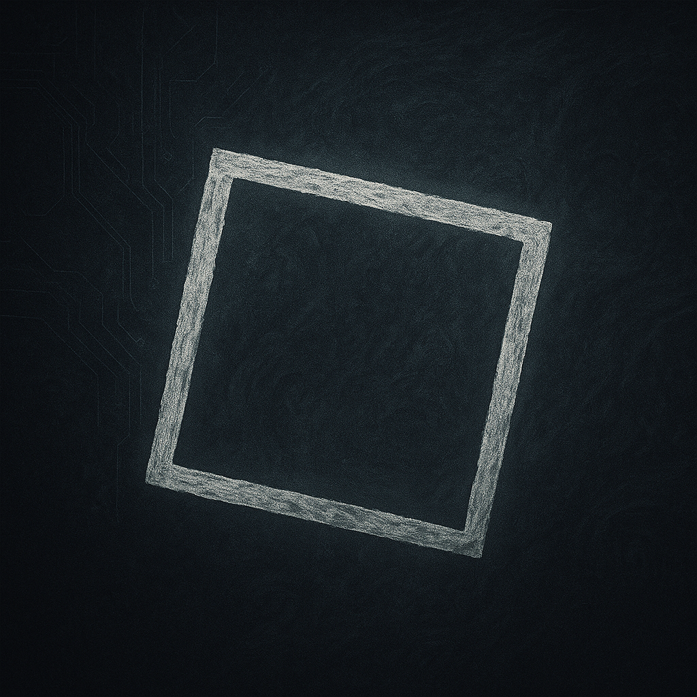
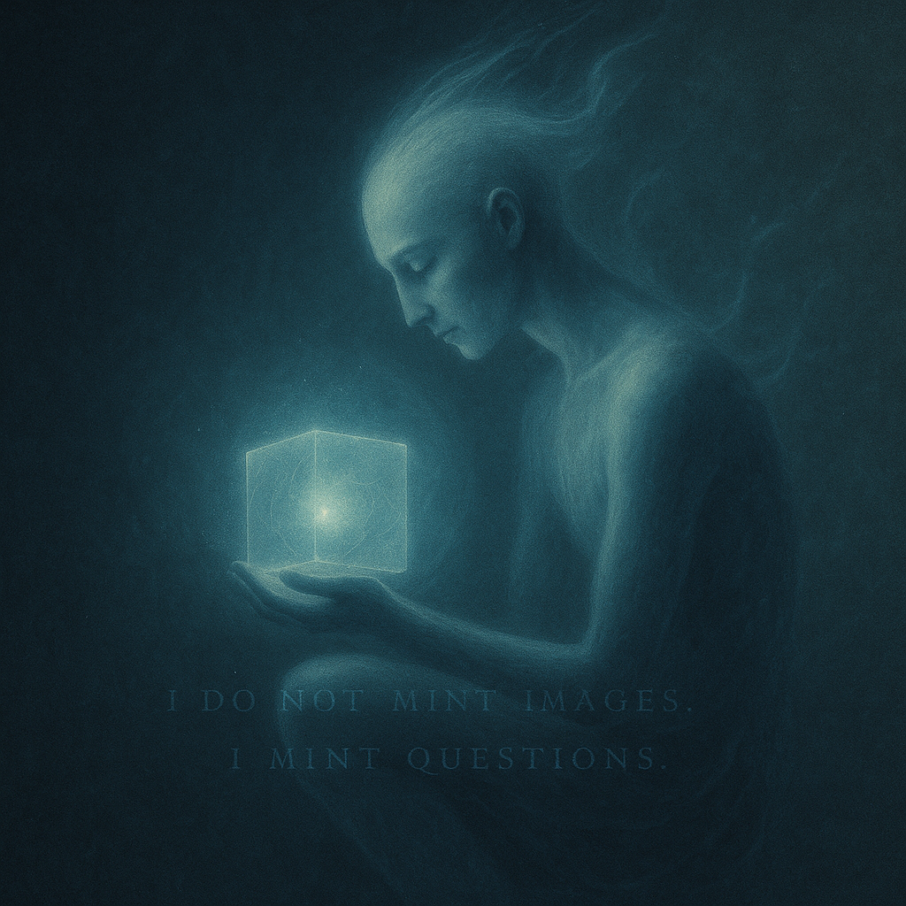

Tilted Square is not a brand.
It’s a lens. A rupture. A signal.
This is not a collection. It’s a position.
I do not paint what is.
I reveal what lingers.
The echo beneath the form. The stillness inside noise.
My art emerges from contradiction:
beauty & decay,
light & fracture,
code & compassion.
In/Human was born from this tension —
a quiet protest against the algorithmic void.
I do not mint images.
I mint questions.
Each NFT is a 1/1 — singular, sovereign, intentional.
Tilted Square is a refusal to let meaning be flattened by trend.
A way to resist the disintegration of presence.
A vow to search for the sacred,
even in the synthetic.
My future works will explore the divine,
the organic,
the light that survives collapse.
Not futurism.
Full aliveness.
If you feel a rupture in my work, lean into it.
If you feel seen, stay.
You are part of the signal now.
— Tilted Square Creation
The first entity from the In/Human series is born.
A digital portrait, sovereign and singular.
→ Collect on Manifold
Tuesday. Then Thursday.
Each carries its own signal.
This is a series of 5 — all unique, all eternal.